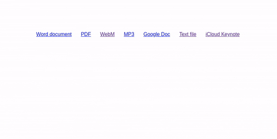

Peek is a browser extension I created that lets you preview links to files by simply dragging your mouse over them. It was originally released in 2015, but I haven’t worked on it much since 2017. I’m excited to finally release version 3.0, a complete rewrite with a ton of added functionality!
The previous version of Peek was functional, but it had a lot of drawbacks. The library it was using to generate popups created all of them on the initial page load, instead of when they were actually needed, which meant Peek maxed out at 20 previews per page (or else the browser could freeze). Peek also heavily used jQuery, which increased the amount of system RAM the extension used in the background.

Peek 3.0 is nearly a complete rewrite. It now uses the Tippy.js library to render previews, which generates popups only when you scroll over a link — not when the page is first loaded. That means Peek no longer slows down the browser, and the maximum limit for previews on a single page is gone.
The new version also supports more types of links. JPEG, PNG, GIF, SVG, PNG, APNG, ICO, and BMP images can now be previewed, as well as plain text (.txt) files and links to iCloud documents.
There are lots of other smaller improvements as well. Firefox is now supported, detection for Google Docs links has been improved, PDF previews work better on Chrome and Opera, and many bugs have been fixed.
Peek 3.0 is rolling out now on the Chrome Web Store and Opera add-ons site. The Firefox version is currently under review, and should go live here when it’s ready.